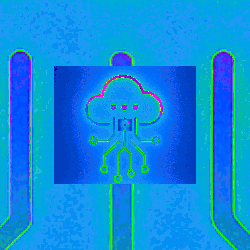

A Infraestrutura Digital da BIOCERR é a espinha dorsal invisível que conecta dados, processos e territórios de forma integrada e regenerativa. Ela vai além da tecnologia por si só — é um ecossistema de suporte técnico, ético e territorial, que permite à rede BIO operar com transparência, inteligência e corresponsabilidade.
Ao invés de plataformas centralizadas, utilizamos arquiteturas distribuídas, interoperáveis e de código aberto. Isso garante autonomia local, soberania dos dados e participação ativa das comunidades envolvidas. Cada nó da rede contribui e se beneficia, fortalecendo a resiliência coletiva.
A infraestrutura inclui módulos de rastreabilidade, gestão de indicadores regenerativos, acompanhamento em tempo real e integração com sistemas públicos e comunitários. Tudo é pensado para ser modular, adaptável e em constante evolução.
A inteligência artificial BIO atua como mediadora dessas interações digitais, traduzindo complexidade em clareza, sugerindo caminhos, alertando sobre desequilíbrios e apoiando decisões informadas com base nos princípios da regeneração.
Investir em infraestrutura digital é garantir que a regeneração aconteça com consistência, monitoramento e alinhamento entre pessoas, territórios e tecnologias. É o alicerce para um novo ciclo de cuidado planetário.

🧱 Blockchain
BIOBlock: O Blockchain é uma tecnologia de registro distribuído que funciona como um livro-razão digital, imutável e transparente. Em vez de depender de uma única autoridade central, as informações são armazenadas em uma rede descentralizada de computadores (nós). Cada transação ou dado validado é agrupado em um bloco, que contém um identificador único (hash) e a referência criptográfica ao bloco anterior, formando uma cadeia inviolável.
Sua principal vantagem está na segurança e confiabilidade, já que qualquer tentativa de alteração é imediatamente detectada por todos os participantes da rede. Além disso, o Blockchain garante transparência, rastreabilidade e confiança em processos digitais, eliminando intermediários e reduzindo custos.
Na infraestrutura digital da BIOCERR, o Blockchain tem papel essencial para:
- Garantir autenticidade dos registros de produção e logística.
- Proteger a propriedade intelectual da inovação.
- Permitir auditoria em tempo real de processos industriais descentralizados.
- Integrar contratos inteligentes (smart contracts) que automatizam regras de operação entre a Indústria Matriz e as MCEFPs.
Assim, o Blockchain não é apenas uma tecnologia de segurança, mas também um pilar de governança digital, assegurando a integridade da rede produtiva e a confiança entre todos os envolvidos.
💡 Como interagir com o gráfico:
• Role o mouse (ou pinça no touch) para dar zoom.
• Clique nos nós para ver conteúdo.
• Clique e arraste o fundo para mover o quadro.
• Clique e arraste um botão para reposicioná-lo; as setas acompanham.
• Dê duplo clique em qualquer área vazia para recentralizar a visão.
📊 Big Data
Fluxo Vivo: O termo Big Data refere-se ao conjunto massivo de dados gerados continuamente por pessoas, empresas, dispositivos e sistemas digitais. Esses dados se caracterizam pelos chamados “5 Vs”:
- Volume: a quantidade de dados cresce exponencialmente, exigindo novas formas de armazenamento.
- Velocidade: a captura e o processamento precisam acontecer em tempo real ou quase em tempo real.
- Variedade: os dados podem ser estruturados (planilhas, bancos relacionais) ou não estruturados (imagens, vídeos, textos, sensores IoT).
- Veracidade: a qualidade e a confiabilidade da informação precisam ser validadas.
- Valor: transformar dados em conhecimento estratégico é o objetivo final.
No contexto da Infraestrutura Digital, o Big Data é essencial para analisar padrões de consumo, prever falhas em sistemas, monitorar cadeias de produção e apoiar decisões estratégicas baseadas em evidências.
As tecnologias mais utilizadas incluem:
- Hadoop e Spark para processamento massivo distribuído.
- Data Lakes para armazenar dados brutos em larga escala.
- Machine Learning aplicado para prever tendências, detectar anomalias e otimizar processos.
No caso da BIOCERR e do SMPD, o Big Data é fundamental para integrar informações vindas das MCEFPs, da Indústria Matriz e dos usuários finais, permitindo monitoramento em tempo real e geração de insights que fortalecem a sustentabilidade e a eficiência do sistema. O módulo de Big Data da BIOCERR transforma volumes massivos de informações em inteligência regenerativa. Ele coleta, organiza e interpreta dados provenientes de diversas fontes — desde sensores nas MCEFPs, até sistemas públicos, bases climáticas, indicadores comunitários e interações em tempo real com usuários.
💡 Como interagir com o gráfico:
• Role o mouse (ou pinça no touch) para dar zoom.
• Clique nos nós para ver conteúdo.
• Clique e arraste o fundo para mover o quadro.
• Clique e arraste um botão para reposicioná-lo; as setas acompanham.
• Dê duplo clique em qualquer área vazia para recentralizar a visão.
🌐 IoT
Rede BIO-IoT: Na BIOCERR, a Internet das Coisas (IoT) é muito mais do que conectar objetos — é uma forma de dar sensibilidade ao território. Cada MCEFP funciona como um organismo vivo, equipado com sensores e dispositivos que monitoram variáveis em tempo real: temperatura, fluxo de envase, uso de água, nível dos reservatórios, qualidade do ar, consumo de energia e até padrões de interação humana.
A Internet das Coisas (IoT) representa a integração de dispositivos físicos ao ambiente digital, permitindo que sensores, máquinas, veículos e sistemas industriais se conectem e troquem informações em tempo real. Essa infraestrutura amplia a inteligência operacional, reduz falhas humanas e possibilita decisões automáticas baseadas em dados coletados continuamente.
No contexto da Indústria 4.0, a IoT é essencial para monitorar cadeias produtivas, rastrear ativos e gerenciar recursos energéticos com eficiência. Cada dispositivo conectado atua como um nó inteligente, enviando dados a plataformas analíticas que identificam padrões, anomalias e oportunidades de otimização.
Entre suas aplicações estão:
- Manufatura Inteligente: máquinas conectadas que ajustam parâmetros de produção de forma autônoma.
- Cidades Inteligentes: sensores urbanos que monitoram tráfego, iluminação pública e qualidade do ar.
- Saúde Conectada: dispositivos vestíveis que coletam informações vitais e integram diagnósticos preventivos.
- Logística: rastreamento de cargas e frota em tempo real, reduzindo perdas e aumentando a previsibilidade.
Ao lado do Blockchain e do Big Data, a IoT forma o tripé tecnológico da transformação digital, viabilizando operações descentralizadas, transparentes e altamente escaláveis.
💡 Como interagir com o gráfico:
• Role o mouse (ou pinça no touch) para dar zoom.
• Clique nos nós para ver conteúdo.
• Clique e arraste o fundo para mover o quadro.
• Clique e arraste um botão para reposicioná-lo; as setas acompanham.
• Dê duplo clique em qualquer área vazia para recentralizar a visão.
🧿 Gêmeos Digitais
Simuladores Regenerativos: Na BIOCERR, os Gêmeos Digitais não são apenas cópias virtuais de equipamentos ou processos — eles são espelhos vivos de territórios regenerativos. Cada MCEFP e Indústria Matriz pode ter sua versão digital que simula, antecipa e aprende com o comportamento real dos sistemas físicos.
Isso significa que conseguimos prever falhas, otimizar rotas, adaptar produções e até testar decisões complexas sem causar impacto real. É como se a própria fábrica pudesse sonhar antes de agir.
Os Gêmeos Digitais da BIOCERR também integram dados ambientais, sociais e operacionais em tempo real. Assim, conseguimos entender como as decisões locais afetam o entorno, a biodiversidade, os fluxos de logística e o bem-estar das comunidades.
Mais do que automação, os Gêmeos Digitais permitem governança antecipatória, ou seja, decisões baseadas em simulações, com participação humana e inteligência artificial trabalhando em conjunto para o bem coletivo.
Na visão BIOCERR, um Gêmeo Digital é uma memória sensível e projetiva da relação entre tecnologia, natureza e cuidado.
💡 Como interagir com o gráfico:
• Role o mouse (ou pinça no touch) para dar zoom.
• Clique nos nós para ver conteúdo.
• Clique e arraste o fundo para mover o quadro.
• Clique e arraste um botão para reposicioná-lo; as setas acompanham.
• Dê duplo clique em qualquer área vazia para recentralizar a visão.
🛡️ Cibersegurança
Escudo BIO – Nuvem GAIA e Operações: A cibersegurança na BIOCERR é uma camada viva, distribuída e auditável que protege pessoas, dados e processos do SMPD em todas as frentes: Indústria Matriz, MCEFPs, gêmeos digitais e a nuvem GAIA. Atuamos em defesa por camadas (Zero Trust), combinando identidade forte, criptografia ponta a ponta, microssegmentação de rede, monitoramento contínuo pela IA BIO e rotinas de resposta a incidentes com auditoria imutável.
- Identidade e Acesso: Autenticação multifator (MFA), certificados por unidade (PKI BIO), RBAC por papel (operador, auditor, governança) e chaves rotativas.
- Perímetro e Trânsito: Firewalls NGFW, VPN (WireGuard/OpenVPN), TLS 1.3, política de least privilege entre serviços (service-to-service).
- Nuvem GAIA: Criptografia em repouso (KMS), orquestração com políticas de segurança, isolamento por namespaces/projetos, varredura de imagens e detecção de drift.
- Monitoramento & SIEM: Coletores de logs, correlação de eventos (Wazuh/ELK), alertas em tempo real e playbooks de resposta (TheHive/Cortex).
- Backup & Resiliência: Replicação geográfica, testes de restauração, immutable logs (WORM) e registro de incidentes em blockchain interno.
- Conformidade & Ética: Diretrizes ISO 27001/NIST, privacidade por design e trilha de governança com participação do Conselho BIO.
💡 Como interagir com o gráfico:
• Role o mouse (ou pinça no touch) para dar zoom.
• Clique nos nós para ver conteúdo.
• Clique e arraste o fundo para mover o quadro.
• Clique e arraste um botão para reposicioná-lo; as setas acompanham.
• Dê duplo clique em qualquer área vazia para recentralizar a visão.